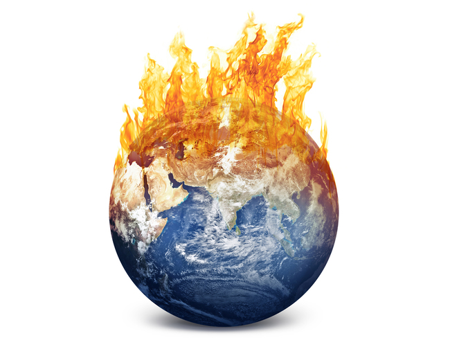

 flower, the characteristic reproductive structure of angiosperms. As popularly used, the term “flower” especially applies when part or all of the reproductive structure is distinctive in colour and form. In their range of colour, size, form, and anatomical arrangement, flowers present a seemingly endless variety of combinations. They range in size from minute blossoms to giant blooms. In some plants, such as poppy, magnolia, tulip, and petunia, each flower is relatively large and showy and is produced singly, while in other plants, such as aster, snapdragon, and lilac, the individual flowers may be very small and are borne in a distinctive cluster known as an inflorescence. Regardless of their variety, all flowers have a uniform function, the reproduction of the species through the production of seeds Basically, each flower consists of a floral axis upon which are borne t The sepals and petals together make up the perianth, or floral envelope. The sepals are usually greenish and often resemble reduced leaves, while the petals are usually colourful and showy. Sepals and petals that are indistinguishable, as in lilies and tulips, are sometimes referred to as tepals. The androecium, or male parts of the flower, comprise the stamens, each of which consists of a supporting filament and an anther, in which pollen is produced. The gynoecium, or female parts of the flower, comprises one or more pistils, each of which consists of an ovary, with an upright extension, the style, on the top of which rests the stigma, the pollen-receptive surface. The ovary encloses the ovules, or potential seeds. A pistil may be simple, made up of a single carpel, or ovule-bearing modified leaf; or compound, formed from several carpels joined together A flower having sepals, petals, stamens, and pistils is complete; lacking one or more of such structures, it is said to be incomplete. Stamens and pistils are not present together in all flowers. When both are present the flower is said to be perfect, or bisexual, regardless of a lack of any other part that renders it incomplete . A flower that lacks stamens is pistillate, or female, while one that lacks pistils is said to be staminate, or male. When the same plant bears unisexual flowers of both sexes, it is said to be monoecious (e.g., tuberous begonia, hazel, oak, corn); when the male and female flowers are on different plants, the plant is dioecious (e.g., date, holly, cottonwood, willow); when there are male, female, and bisexual flowers on the same plant, the plant is termed polygamous. A flower may be radially symmetrical, as in roses and petunias, in which case it is termed regular or actinomorphic. A bilaterally symmetrical flower, as in orchids and snapdragons, is irregular or zygomorphic.
The stamens and pistils are directly involved with the production of seed. The stamen bears microsporangia (spore cases) in which are developed numerous microspores (potential pollen grains); the pistil bears ovules, each enclosing an egg cell. When a microspore germinates, it is known as a pollen grain. When the pollen sacs in a stamen’s anther are ripe, the anther releases them and the pollen is shed. Fertilization can occur only if the pollen grains are transferred from the anther to the stigma of a pistil, a process known as pollination. After a pollen grain has reached the stigma, it germinates, and a pollen tube protrudes from it. This tube, containing two male gametes (sperms), extends into the ovary and reaches the ovule, discharging its gametes so that one fertilizes the egg cell, which becomes an embryo, and the other joins with two polar nuclei to form the endosperm. (Normally many pollen grains fall on a stigma; they all may germinate, but only one pollen tube enters any one ovule.) Following fertilization, the embryo is on its way to becoming a seed, and at this time the ovary itself enlarges to form the fruit. Flowers have been symbols of beauty in most civilizations of the world, and flower giving is still among the most popular of social amenities. As gifts, flowers serve as expressions of affection for spouses, other family members, and friends; as decorations at weddings and other ceremonies; as tokens of respect for the deceased; as cheering gifts to the bedridden; and as expressions of thanks or appreciation. Most flowers bought by the public are grown in commercial greenhouses or horticultural fields and then sold through wholesalers to retail florists. See also articles on individual flowers (e.g., carnation; lotus; petunia; rose; tulip). Besides the hard proof of flowers in or shortly before the Cretaceous, there is some circumstantial evidence of flowers as much as 250 million years ago. A chemical used by plants to defend their flowers, oleanane, has been detected in fossil plants that old, including gigantopterids, which evolved at that time and bear many of the traits of modern, flowering plants, though they are not known to be flowering plants themselves, because only their stems and prickles have been found preserved in detail; one of the earliest examples of petrification.
The similarity in leaf and stem structure can be very important, because flowers are genetically just an adaptation of normal leaf and stem components on plants, a combination of genes normally responsible for forming new shoots. The most primitive flowers are thought to have had a variable number of flower parts, often separate from (but in contact with) each other. The flowers would have tended to grow in a spiral pattern, to be bisexual (in plants, this means both male and female parts on the same flower), and to be dominated by the ovary (female part). As flowers grew more advanced, some variations developed parts fused together, with a much more specific number and design, and with either specific sexes per flower or plant, or at least "ovary inferior". The general assumption is that the function of flowers, from the start, was to involve animals in the reproduction process. Pollen can be scattered without bright colors and obvious shapes, which would therefore be a liability, using the plant's resources, unless they provide some other benefit. One proposed reason for the sudden, fully developed appearance of flowers is that they evolved in an isolated setting like an island, or chain of islands, where the plants bearing them were able to develop a highly specialized relationship with some specific animal (a wasp, for example), the way many island species develop today. This symbiotic relationship, with a hypothetical wasp bearing pollen from one plant to another much the way fig wasps do today, could have eventually resulted in both the plant(s) and their partners developing a high degree of specialization. Island genetics is believed to be a common source of speciation, especially when it comes to radical adaptations which seem to have required inferior transitional forms. Note that the wasp example is not incidental; bees, apparently evolved specifically for symbiotic plant relationships, are descended from wasps. The hazardous nature of e-waste is one of the rapidly growing environmental problems of the world. The ever-increasing amount of e-waste associated with the lack of awareness and appropriate skill is deepening the problem. A large number of workers are involved in crude dismantling of these electronic items for their livelihood and their health is at risk; therefore, there is an urgent need to plan a preventive strategy in relation to health hazards of e-waste handling among these workers in India. Required information should be provided to these workers regarding safe handling of e-waste and personal protection. For e-waste management many technical solutions are available, but to be adopted in the management system, prerequisite conditions such as legislation, collection system, logistics, and manpower should be prepared. This may require operational research and evaluation studies.